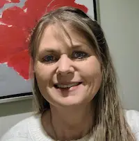

Charity Becker | WDD130
My name is Charity I currently live in Kalispell Montana. I have 6 children, one is married, four are still at home and one is serving a mission. I currently work for an MSP as a field engineer. I love my family and enjoy doing most anything with them. I love the outdoors and puzzles. One thing I like about myself is even though I am older, and it is not always easy, I am still pursuing my goal of getting my bachelor’s degree.